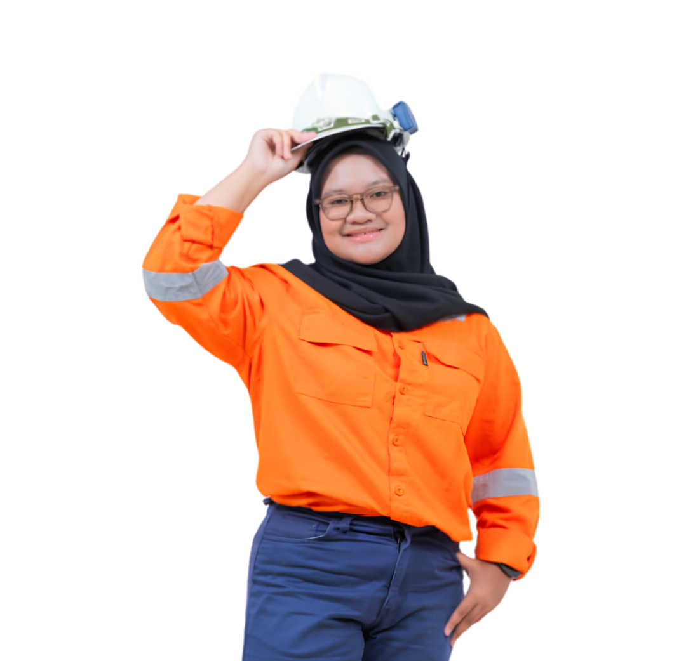
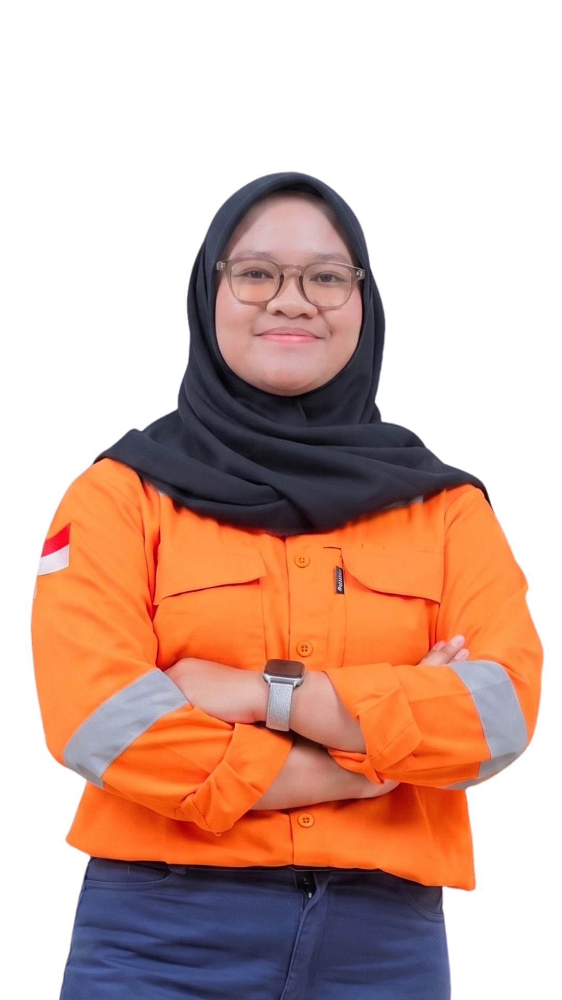
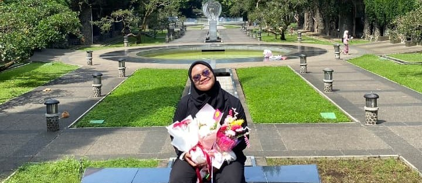

Hello, I'm
Syifa Syakira
Forestry Engineer
Hi, I'm Syifa Syakira, a Forestry Engineering graduate from Bandung Institute of Technology (ITB) with a specialization in Reforestation Technology.
I am deeply passionate about bridging field-based ecological research with data-driven technology to solve complex environmental challenges. Throughout my academic and professional journey, I have actively engaged in diverse projects ranging from post-mining land reclamation and biodiversity monitoring, to watershed rehabilitation and sustainability assessments. I specialize in combining hands-on field measurements—such as flora/fauna inventory and soil analysis—with digital spatial tools like ArcGIS to turn complex environmental variables into actionable insights for decision-making.
Interest & Vision
I thrive in collaborative, problem-solving environments. My professional vision is to design and implement nature-based solutions and sustainable landscape management practices. Whether working in forestry, conservation, or industrial HSE (Health, Safety, and Environment), I am committed to driving impactful ecosystem restoration and ensuring robust environmental compliance that benefits both nature and industry.
Education
Institut Teknologi Bandung
Bachelor of Forestry Engineering
GPA: 3.50 / 4.00 • Grad: 2026
Dean's List Awardee:
- Semester 1 (2024/2025) – 4.00/4.00
- Semester 2 (2025/2026) – 4.00/4.00

Graduation - ITB 2026
SMAN 19 Bandung
Graduated: 2022
Interpersonal Skills
- Logical and Structured Thinking
- Analytical Thinking & Problem Solving
- Strong Teamwork and Collaboration Skills
- Monitoring, Evaluation & Reporting Support
- Detail-Oriented in Data and Information Management
- Proactive & Self-motivated